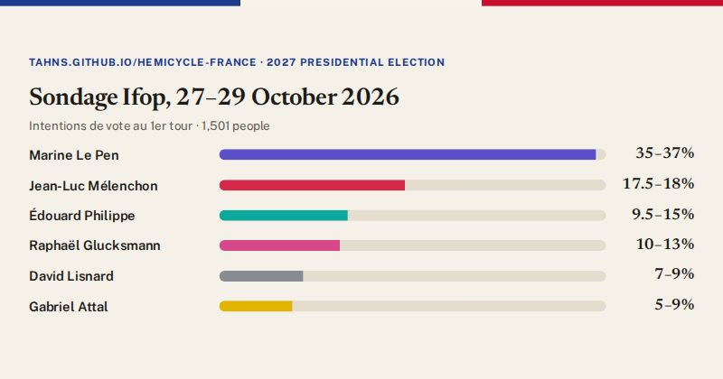

Présidentielle 2027 · sondage
Intentions de vote au 1er tour : Ifop, enquête du 27-29 octobre 2026

| Candidat | Intentions de vote |
|---|---|
| Marine Le Pen | 35 à 37 % |
| Jean-Luc Mélenchon | 17,5 à 18 % |
| Édouard Philippe | 9,5 à 15 % |
| Raphaël Glucksmann | 10 à 13 % |
| David Lisnard | 7 à 9 % |
| Gabriel Attal | 5 à 9 % |
| Bruno Retailleau | 4 à 7 % |
| Éric Zemmour | 4 à 4,5 % |
| Marine Tondelier | 3 à 3,5 % |
| Fabien Roussel | 1,5 à 2 % |
| Nicolas Dupont-Aignan | 1,5 à 2 % |
| Nathalie Arthaud | 0,5 à 1 % |